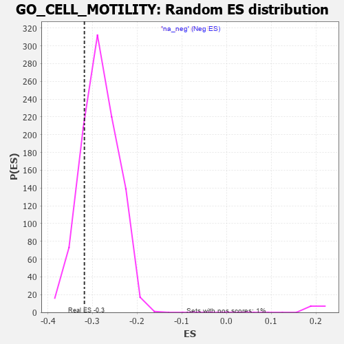

| | | Dataset | 7d |
| Phenotype | NoPhenotypeAvailable |
| Upregulated in class | na_neg |
| GeneSet | GO_CELL_MOTILITY |
| Enrichment Score (ES) | -0.31814453 |
| Normalized Enrichment Score (NES) | -1.1183352 |
| Nominal p-value | 0.19574037 |
| FDR q-value | 0.7303827 |
| FWER p-Value | 1.0 |
Table: GSEA Results Summary
 Fig 1: Enrichment plot: GO_CELL_MOTILITY
Fig 1: Enrichment plot: GO_CELL_MOTILITY
Profile of the Running ES Score & Positions of GeneSet Members on the Rank Ordered List
| PROBE | GENE SYMBOL | GENE_TITLE | RANK IN GENE LIST | RANK METRIC SCORE | RUNNING ES | CORE ENRICHMENT | | 1 | SIX2 | | | 40 | 3.152 | 0.0140 | No |
| 2 | DCLK1 | | | 55 | 2.532 | 0.0277 | No |
| 3 | RAC2 | | | 60 | 2.442 | 0.0421 | No |
| 4 | EMX2 | | | 117 | 1.451 | 0.0437 | No |
| 5 | OLIG3 | | | 149 | 1.268 | 0.0474 | No |
| 6 | FOXF1 | | | 176 | 1.136 | 0.0509 | No |
| 7 | DNER | | | 188 | 1.098 | 0.0562 | No |
| 8 | RHOU | | | 210 | 1.031 | 0.0598 | No |
| 9 | RHOH | | | 228 | 0.987 | 0.0636 | No |
| 10 | INSM1 | | | 250 | 0.939 | 0.0666 | No |
| 11 | TBX20 | | | 267 | 0.880 | 0.0699 | No |
| 12 | HGF | | | 276 | 0.870 | 0.0741 | No |
| 13 | SOX14 | | | 278 | 0.859 | 0.0793 | No |
| 14 | FSCN1 | | | 297 | 0.830 | 0.0820 | No |
| 15 | ARX | | | 322 | 0.782 | 0.0836 | No |
| 16 | NUP85 | | | 329 | 0.772 | 0.0876 | No |
| 17 | DAPK2 | | | 343 | 0.754 | 0.0905 | No |
| 18 | GSK3A | | | 351 | 0.745 | 0.0941 | No |
| 19 | LGR6 | | | 360 | 0.738 | 0.0976 | No |
| 20 | PLD1 | | | 381 | 0.716 | 0.0993 | No |
| 21 | BAX | | | 387 | 0.711 | 0.1030 | No |
| 22 | LRP1 | | | 470 | 0.648 | 0.0963 | No |
| 23 | PKN1 | | | 535 | 0.619 | 0.0917 | No |
| 24 | SRF | | | 542 | 0.615 | 0.0947 | No |
| 25 | APEX1 | | | 577 | 0.604 | 0.0939 | No |
| 26 | ALX1 | | | 590 | 0.598 | 0.0960 | No |
| 27 | VASH1 | | | 712 | 0.556 | 0.0836 | No |
| 28 | ID1 | | | 719 | 0.555 | 0.0862 | No |
| 29 | RERE | | | 787 | 0.536 | 0.0807 | No |
| 30 | LDB2 | | | 831 | 0.523 | 0.0783 | No |
| 31 | HMGB2 | | | 892 | 0.507 | 0.0736 | No |
| 32 | HDAC5 | | | 900 | 0.506 | 0.0757 | No |
| 33 | AKT1 | | | 1040 | 0.476 | 0.0605 | No |
| 34 | MEF2C | | | 1054 | 0.473 | 0.0617 | No |
| 35 | SRC | | | 1128 | 0.459 | 0.0550 | No |
| 36 | NCK2 | | | 1131 | 0.458 | 0.0575 | No |
| 37 | GAB1 | | | 1158 | 0.453 | 0.0569 | No |
| 38 | RFX3 | | | 1171 | 0.451 | 0.0581 | No |
| 39 | PPIL2 | | | 1222 | 0.443 | 0.0542 | No |
| 40 | ELP3 | | | 1223 | 0.442 | 0.0569 | No |
| 41 | DRGX | | | 1378 | 0.414 | 0.0393 | No |
| 42 | DOCK7 | | | 1398 | 0.410 | 0.0394 | No |
| 43 | P2RY1 | | | 1416 | 0.407 | 0.0396 | No |
| 44 | PDS5B | | | 1432 | 0.403 | 0.0401 | No |
| 45 | DDX4 | | | 1436 | 0.403 | 0.0422 | No |
| 46 | DACH1 | | | 1471 | 0.395 | 0.0402 | No |
| 47 | SOS1 | | | 1547 | 0.384 | 0.0327 | No |
| 48 | PTPRT | | | 1578 | 0.378 | 0.0311 | No |
| 49 | AGO2 | | | 1767 | 0.343 | 0.0087 | No |
| 50 | LRP5 | | | 1769 | 0.342 | 0.0106 | No |
| 51 | STRAP | | | 1793 | 0.339 | 0.0097 | No |
| 52 | ABR | | | 1812 | 0.335 | 0.0094 | No |
| 53 | SGPL1 | | | 1820 | 0.334 | 0.0105 | No |
| 54 | PAK3 | | | 1889 | 0.322 | 0.0036 | No |
| 55 | CUL3 | | | 1893 | 0.321 | 0.0052 | No |
| 56 | FMNL2 | | | 1946 | 0.314 | 0.0003 | No |
| 57 | CCR4 | | | 1959 | 0.312 | 0.0006 | No |
| 58 | FOXO4 | | | 2004 | 0.304 | -0.0033 | No |
| 59 | RAF1 | | | 2011 | 0.303 | -0.0022 | No |
| 60 | BMP7 | | | 2107 | 0.290 | -0.0128 | No |
| 61 | ATOH8 | | | 2145 | 0.285 | -0.0159 | No |
| 62 | DDR1 | | | 2176 | 0.280 | -0.0181 | No |
| 63 | SYK | | | 2186 | 0.278 | -0.0176 | No |
| 64 | C1QBP | | | 2189 | 0.278 | -0.0162 | No |
| 65 | SCRT1 | | | 2323 | 0.257 | -0.0320 | No |
| 66 | ANO6 | | | 2339 | 0.255 | -0.0324 | No |
| 67 | DOCK8 | | | 2341 | 0.254 | -0.0310 | No |
| 68 | BCAS3 | | | 2352 | 0.253 | -0.0307 | No |
| 69 | MIF | | | 2357 | 0.252 | -0.0297 | No |
| 70 | MET | | | 2430 | 0.240 | -0.0376 | No |
| 71 | NUMB | | | 2519 | 0.224 | -0.0478 | No |
| 72 | SRP54 | | | 2544 | 0.220 | -0.0496 | No |
| 73 | EMC10 | | | 2607 | 0.211 | -0.0564 | No |
| 74 | VAV3 | | | 2614 | 0.210 | -0.0559 | No |
| 75 | ATRN | | | 2640 | 0.207 | -0.0579 | No |
| 76 | MITF | | | 2659 | 0.205 | -0.0590 | No |
| 77 | ARID2 | | | 2664 | 0.204 | -0.0583 | No |
| 78 | GRB14 | | | 2666 | 0.204 | -0.0571 | No |
| 79 | SASH1 | | | 2682 | 0.201 | -0.0579 | No |
| 80 | PHB2 | | | 2712 | 0.197 | -0.0605 | No |
| 81 | HAS1 | | | 2722 | 0.195 | -0.0604 | No |
| 82 | SLIT2 | | | 2724 | 0.195 | -0.0594 | No |
| 83 | PPIA | | | 2754 | 0.190 | -0.0620 | No |
| 84 | TTLL1 | | | 2764 | 0.189 | -0.0620 | No |
| 85 | FER | | | 2803 | 0.183 | -0.0659 | No |
| 86 | BRK1 | | | 2805 | 0.183 | -0.0649 | No |
| 87 | RIC8A | | | 2833 | 0.179 | -0.0673 | No |
| 88 | NR2E1 | | | 2844 | 0.177 | -0.0675 | No |
| 89 | DAPK3 | | | 2880 | 0.169 | -0.0711 | No |
| 90 | ACVR1 | | | 2932 | 0.161 | -0.0768 | No |
| 91 | UNC5C | | | 2997 | 0.150 | -0.0842 | No |
| 92 | ULK4 | | | 3022 | 0.146 | -0.0864 | No |
| 93 | WNT4 | | | 3023 | 0.146 | -0.0856 | No |
| 94 | LEF1 | | | 3037 | 0.144 | -0.0864 | No |
| 95 | PROS1 | | | 3070 | 0.141 | -0.0897 | No |
| 96 | RREB1 | | | 3099 | 0.137 | -0.0925 | No |
| 97 | AIMP1 | | | 3105 | 0.136 | -0.0923 | No |
| 98 | GPX1 | | | 3109 | 0.135 | -0.0919 | No |
| 99 | TLX3 | | | 3140 | 0.131 | -0.0950 | No |
| 100 | GCNT2 | | | 3162 | 0.128 | -0.0970 | No |
| 101 | PAX6 | | | 3170 | 0.127 | -0.0971 | No |
| 102 | MEMO1 | | | 3237 | 0.115 | -0.1050 | No |
| 103 | SMAD3 | | | 3303 | 0.105 | -0.1129 | No |
| 104 | SMAD7 | | | 3369 | 0.093 | -0.1208 | No |
| 105 | PTPRK | | | 3454 | 0.084 | -0.1313 | No |
| 106 | CDK5 | | | 3480 | 0.080 | -0.1340 | No |
| 107 | UNK | | | 3491 | 0.079 | -0.1349 | No |
| 108 | FES | | | 3501 | 0.077 | -0.1356 | No |
| 109 | PIN1 | | | 3543 | 0.069 | -0.1405 | No |
| 110 | DMRT1 | | | 3546 | 0.068 | -0.1404 | No |
| 111 | FUT8 | | | 3551 | 0.067 | -0.1405 | No |
| 112 | GPR18 | | | 3578 | 0.063 | -0.1435 | No |
| 113 | MAPK3 | | | 3589 | 0.062 | -0.1444 | No |
| 114 | SBDS | | | 3640 | 0.053 | -0.1506 | No |
| 115 | CCKAR | | | 3648 | 0.051 | -0.1512 | No |
| 116 | NF1 | | | 3713 | 0.040 | -0.1593 | No |
| 117 | CCAR1 | | | 3737 | 0.036 | -0.1621 | No |
| 118 | FMNL3 | | | 3739 | 0.036 | -0.1620 | No |
| 119 | SKI | | | 3762 | 0.032 | -0.1647 | No |
| 120 | DGKZ | | | 3879 | 0.015 | -0.1798 | No |
| 121 | NIPBL | | | 3900 | 0.010 | -0.1823 | No |
| 122 | NRG3 | | | 3925 | 0.005 | -0.1854 | No |
| 123 | TOP2B | | | 3938 | 0.005 | -0.1870 | No |
| 124 | GPC6 | | | 3950 | 0.002 | -0.1884 | No |
| 125 | IGF1R | | | 3970 | -0.002 | -0.1909 | No |
| 126 | SCAI | | | 3983 | -0.005 | -0.1924 | No |
| 127 | DDX58 | | | 3998 | -0.007 | -0.1942 | No |
| 128 | TOR1A | | | 4030 | -0.013 | -0.1982 | No |
| 129 | PKN2 | | | 4060 | -0.017 | -0.2019 | No |
| 130 | SFRP2 | | | 4065 | -0.018 | -0.2023 | No |
| 131 | CSF1 | | | 4074 | -0.019 | -0.2032 | No |
| 132 | PDE4B | | | 4089 | -0.022 | -0.2049 | No |
| 133 | MTOR | | | 4114 | -0.025 | -0.2079 | No |
| 134 | ABL1 | | | 4125 | -0.027 | -0.2090 | No |
| 135 | CRK | | | 4139 | -0.031 | -0.2105 | No |
| 136 | TIMP1 | | | 4209 | -0.043 | -0.2193 | No |
| 137 | GBF1 | | | 4215 | -0.044 | -0.2197 | No |
| 138 | UNC5D | | | 4217 | -0.044 | -0.2195 | No |
| 139 | ARPC2 | | | 4232 | -0.047 | -0.2211 | No |
| 140 | GPC1 | | | 4238 | -0.048 | -0.2214 | No |
| 141 | WNT11 | | | 4282 | -0.056 | -0.2267 | No |
| 142 | BAG4 | | | 4314 | -0.061 | -0.2304 | No |
| 143 | ARF4 | | | 4383 | -0.073 | -0.2388 | No |
| 144 | PRR5L | | | 4418 | -0.080 | -0.2428 | No |
| 145 | SETD2 | | | 4443 | -0.084 | -0.2454 | No |
| 146 | LAMC1 | | | 4445 | -0.084 | -0.2450 | No |
| 147 | FRMD5 | | | 4455 | -0.085 | -0.2457 | No |
| 148 | LRRK2 | | | 4467 | -0.087 | -0.2466 | No |
| 149 | EPS8 | | | 4474 | -0.088 | -0.2468 | No |
| 150 | ILK | | | 4510 | -0.096 | -0.2508 | No |
| 151 | WNT5B | | | 4517 | -0.098 | -0.2510 | No |
| 152 | RIN2 | | | 4535 | -0.101 | -0.2526 | No |
| 153 | AAMP | | | 4539 | -0.103 | -0.2523 | No |
| 154 | NTRK2 | | | 4543 | -0.104 | -0.2521 | No |
| 155 | ABI2 | | | 4554 | -0.106 | -0.2527 | No |
| 156 | APC | | | 4558 | -0.107 | -0.2525 | No |
| 157 | NISCH | | | 4568 | -0.109 | -0.2530 | No |
| 158 | ADTRP | | | 4612 | -0.120 | -0.2579 | No |
| 159 | GATA3 | | | 4614 | -0.120 | -0.2573 | No |
| 160 | ATOH1 | | | 4615 | -0.121 | -0.2565 | No |
| 161 | DLG5 | | | 4619 | -0.121 | -0.2562 | No |
| 162 | MYLK | | | 4651 | -0.128 | -0.2595 | No |
| 163 | ARPC3 | | | 4659 | -0.129 | -0.2596 | No |
| 164 | PTK7 | | | 4687 | -0.136 | -0.2623 | No |
| 165 | ARF6 | | | 4704 | -0.140 | -0.2635 | No |
| 166 | DCX | | | 4721 | -0.143 | -0.2647 | No |
| 167 | FBLN1 | | | 4748 | -0.149 | -0.2672 | No |
| 168 | PLCG1 | | | 4770 | -0.151 | -0.2690 | No |
| 169 | RTN4 | | | 4783 | -0.154 | -0.2697 | No |
| 170 | CD151 | | | 4791 | -0.156 | -0.2696 | No |
| 171 | TPPP2 | | | 4800 | -0.157 | -0.2697 | No |
| 172 | TERT | | | 4801 | -0.157 | -0.2687 | No |
| 173 | P2RX4 | | | 4813 | -0.161 | -0.2692 | No |
| 174 | FBXW7 | | | 4816 | -0.161 | -0.2685 | No |
| 175 | WDR1 | | | 4824 | -0.163 | -0.2684 | No |
| 176 | BIN3 | | | 4832 | -0.165 | -0.2683 | No |
| 177 | SGK1 | | | 4852 | -0.168 | -0.2698 | No |
| 178 | MARK2 | | | 4899 | -0.177 | -0.2747 | No |
| 179 | ACKR4 | | | 4981 | -0.194 | -0.2841 | No |
| 180 | KLF4 | | | 5005 | -0.198 | -0.2859 | No |
| 181 | PDPK1 | | | 5043 | -0.207 | -0.2894 | No |
| 182 | RAP2C | | | 5073 | -0.218 | -0.2919 | No |
| 183 | DRD2 | | | 5088 | -0.221 | -0.2924 | No |
| 184 | MMP9 | | | 5108 | -0.227 | -0.2935 | No |
| 185 | STK10 | | | 5130 | -0.233 | -0.2948 | No |
| 186 | FLCN | | | 5140 | -0.235 | -0.2945 | No |
| 187 | TBX1 | | | 5166 | -0.241 | -0.2963 | No |
| 188 | HDAC6 | | | 5183 | -0.244 | -0.2969 | No |
| 189 | PARVA | | | 5187 | -0.245 | -0.2958 | No |
| 190 | SMO | | | 5195 | -0.247 | -0.2952 | No |
| 191 | AVL9 | | | 5200 | -0.247 | -0.2942 | No |
| 192 | ASH1L | | | 5203 | -0.248 | -0.2930 | No |
| 193 | ATM | | | 5210 | -0.249 | -0.2922 | No |
| 194 | TMF1 | | | 5225 | -0.251 | -0.2925 | No |
| 195 | KRIT1 | | | 5248 | -0.257 | -0.2938 | No |
| 196 | SSH1 | | | 5254 | -0.258 | -0.2929 | No |
| 197 | PTEN | | | 5262 | -0.261 | -0.2922 | No |
| 198 | CDK1 | | | 5264 | -0.262 | -0.2908 | No |
| 199 | EPHA4 | | | 5273 | -0.265 | -0.2902 | No |
| 200 | FAT1 | | | 5281 | -0.267 | -0.2895 | No |
| 201 | MAGI2 | | | 5295 | -0.269 | -0.2895 | No |
| 202 | CD9 | | | 5319 | -0.277 | -0.2908 | No |
| 203 | SGK3 | | | 5338 | -0.282 | -0.2915 | No |
| 204 | ELMO2 | | | 5341 | -0.283 | -0.2900 | No |
| 205 | EPHA1 | | | 5349 | -0.285 | -0.2892 | No |
| 206 | SOX8 | | | 5404 | -0.296 | -0.2944 | No |
| 207 | MDGA1 | | | 5424 | -0.301 | -0.2951 | No |
| 208 | GCNT1 | | | 5426 | -0.301 | -0.2933 | No |
| 209 | LYST | | | 5448 | -0.307 | -0.2942 | No |
| 210 | LRIG2 | | | 5460 | -0.310 | -0.2938 | No |
| 211 | KIF2A | | | 5511 | -0.322 | -0.2983 | No |
| 212 | FGFR1 | | | 5543 | -0.332 | -0.3003 | No |
| 213 | SPHK1 | | | 5576 | -0.339 | -0.3024 | No |
| 214 | NDE1 | | | 5578 | -0.339 | -0.3005 | No |
| 215 | ROR2 | | | 5626 | -0.353 | -0.3045 | No |
| 216 | ASPM | | | 5637 | -0.358 | -0.3036 | No |
| 217 | LRP12 | | | 5639 | -0.358 | -0.3016 | No |
| 218 | WNK1 | | | 5650 | -0.362 | -0.3006 | No |
| 219 | CD63 | | | 5680 | -0.370 | -0.3022 | No |
| 220 | TTBK2 | | | 5700 | -0.376 | -0.3024 | No |
| 221 | TPTE2 | | | 5736 | -0.388 | -0.3046 | No |
| 222 | ADA | | | 5798 | -0.405 | -0.3101 | No |
| 223 | BBS4 | | | 5806 | -0.407 | -0.3085 | No |
| 224 | RAB13 | | | 5870 | -0.425 | -0.3141 | No |
| 225 | SUN2 | | | 5893 | -0.433 | -0.3143 | No |
| 226 | DOCK1 | | | 5908 | -0.438 | -0.3135 | No |
| 227 | CAP1 | | | 5935 | -0.447 | -0.3141 | No |
| 228 | LDB1 | | | 5944 | -0.451 | -0.3124 | No |
| 229 | CXCR5 | | | 5954 | -0.456 | -0.3108 | No |
| 230 | XBP1 | | | 6011 | -0.475 | -0.3152 | Yes |
| 231 | PRKX | | | 6016 | -0.477 | -0.3128 | Yes |
| 232 | JMY | | | 6023 | -0.479 | -0.3107 | Yes |
| 233 | RAC1 | | | 6036 | -0.484 | -0.3093 | Yes |
| 234 | ADD2 | | | 6046 | -0.487 | -0.3075 | Yes |
| 235 | EVL | | | 6052 | -0.490 | -0.3052 | Yes |
| 236 | JAG1 | | | 6060 | -0.494 | -0.3031 | Yes |
| 237 | USP9Y | | | 6075 | -0.498 | -0.3018 | Yes |
| 238 | CALR | | | 6077 | -0.499 | -0.2989 | Yes |
| 239 | STK4 | | | 6145 | -0.518 | -0.3045 | Yes |
| 240 | FEZF2 | | | 6150 | -0.519 | -0.3019 | Yes |
| 241 | ROCK1 | | | 6152 | -0.520 | -0.2988 | Yes |
| 242 | INSR | | | 6204 | -0.538 | -0.3022 | Yes |
| 243 | TPM1 | | | 6226 | -0.545 | -0.3016 | Yes |
| 244 | RGN | | | 6233 | -0.547 | -0.2990 | Yes |
| 245 | CDC42 | | | 6236 | -0.548 | -0.2959 | Yes |
| 246 | PEX13 | | | 6255 | -0.557 | -0.2949 | Yes |
| 247 | STK39 | | | 6274 | -0.563 | -0.2938 | Yes |
| 248 | DRC1 | | | 6278 | -0.565 | -0.2907 | Yes |
| 249 | MIEN1 | | | 6316 | -0.582 | -0.2920 | Yes |
| 250 | ARMC2 | | | 6363 | -0.602 | -0.2943 | Yes |
| 251 | BBS2 | | | 6383 | -0.608 | -0.2931 | Yes |
| 252 | TRPM4 | | | 6390 | -0.612 | -0.2902 | Yes |
| 253 | CELF3 | | | 6475 | -0.651 | -0.2972 | Yes |
| 254 | DYSF | | | 6481 | -0.654 | -0.2938 | Yes |
| 255 | LAMA1 | | | 6496 | -0.659 | -0.2916 | Yes |
| 256 | DPP4 | | | 6501 | -0.663 | -0.2881 | Yes |
| 257 | TRPV4 | | | 6515 | -0.668 | -0.2857 | Yes |
| 258 | ACE | | | 6526 | -0.674 | -0.2829 | Yes |
| 259 | KANK1 | | | 6536 | -0.678 | -0.2799 | Yes |
| 260 | DDR2 | | | 6542 | -0.681 | -0.2764 | Yes |
| 261 | STK24 | | | 6550 | -0.684 | -0.2731 | Yes |
| 262 | MIIP | | | 6554 | -0.686 | -0.2693 | Yes |
| 263 | ROBO1 | | | 6577 | -0.699 | -0.2679 | Yes |
| 264 | CLN3 | | | 6580 | -0.699 | -0.2639 | Yes |
| 265 | RNF41 | | | 6588 | -0.703 | -0.2605 | Yes |
| 266 | TTLL9 | | | 6657 | -0.743 | -0.2649 | Yes |
| 267 | RFFL | | | 6674 | -0.749 | -0.2624 | Yes |
| 268 | CERS2 | | | 6689 | -0.756 | -0.2596 | Yes |
| 269 | PAK1 | | | 6691 | -0.757 | -0.2551 | Yes |
| 270 | EGFR | | | 6708 | -0.765 | -0.2525 | Yes |
| 271 | SPEF1 | | | 6801 | -0.815 | -0.2595 | Yes |
| 272 | NET1 | | | 6803 | -0.816 | -0.2547 | Yes |
| 273 | ADAM9 | | | 6808 | -0.819 | -0.2502 | Yes |
| 274 | GIPC1 | | | 6819 | -0.826 | -0.2464 | Yes |
| 275 | HEXB | | | 6894 | -0.864 | -0.2508 | Yes |
| 276 | PTPRF | | | 6908 | -0.872 | -0.2472 | Yes |
| 277 | CSPG4 | | | 6918 | -0.878 | -0.2430 | Yes |
| 278 | DNM1L | | | 6963 | -0.913 | -0.2432 | Yes |
| 279 | NPHP4 | | | 6991 | -0.931 | -0.2410 | Yes |
| 280 | CCR2 | | | 7003 | -0.939 | -0.2367 | Yes |
| 281 | NR4A1 | | | 7022 | -0.951 | -0.2332 | Yes |
| 282 | MYH10 | | | 7048 | -0.966 | -0.2306 | Yes |
| 283 | FAT2 | | | 7084 | -0.983 | -0.2292 | Yes |
| 284 | RAB1A | | | 7096 | -0.993 | -0.2245 | Yes |
| 285 | TEKT2 | | | 7177 | -1.053 | -0.2285 | Yes |
| 286 | PTPRJ | | | 7180 | -1.054 | -0.2224 | Yes |
| 287 | TSPO | | | 7194 | -1.065 | -0.2175 | Yes |
| 288 | OVOL2 | | | 7197 | -1.068 | -0.2113 | Yes |
| 289 | LAMB1 | | | 7220 | -1.094 | -0.2075 | Yes |
| 290 | RSPH9 | | | 7265 | -1.137 | -0.2063 | Yes |
| 291 | CIB1 | | | 7280 | -1.152 | -0.2010 | Yes |
| 292 | MSX2 | | | 7299 | -1.171 | -0.1962 | Yes |
| 293 | EFHC1 | | | 7317 | -1.193 | -0.1912 | Yes |
| 294 | GRN | | | 7319 | -1.194 | -0.1840 | Yes |
| 295 | EFHC2 | | | 7326 | -1.199 | -0.1774 | Yes |
| 296 | TEKT1 | | | 7349 | -1.220 | -0.1728 | Yes |
| 297 | LOXL2 | | | 7403 | -1.269 | -0.1720 | Yes |
| 298 | WDR63 | | | 7411 | -1.276 | -0.1651 | Yes |
| 299 | SPEF2 | | | 7418 | -1.289 | -0.1580 | Yes |
| 300 | LHX1 | | | 7431 | -1.305 | -0.1516 | Yes |
| 301 | PPIB | | | 7499 | -1.396 | -0.1518 | Yes |
| 302 | TEKT4 | | | 7539 | -1.455 | -0.1480 | Yes |
| 303 | GAS8 | | | 7540 | -1.455 | -0.1391 | Yes |
| 304 | IQCG | | | 7541 | -1.455 | -0.1302 | Yes |
| 305 | LAMA2 | | | 7549 | -1.468 | -0.1222 | Yes |
| 306 | DCC | | | 7550 | -1.470 | -0.1132 | Yes |
| 307 | PDCD6 | | | 7630 | -1.615 | -0.1136 | Yes |
| 308 | MCU | | | 7644 | -1.637 | -0.1053 | Yes |
| 309 | TEKT3 | | | 7658 | -1.657 | -0.0969 | Yes |
| 310 | DRC7 | | | 7667 | -1.676 | -0.0877 | Yes |
| 311 | TRPM2 | | | 7680 | -1.712 | -0.0788 | Yes |
| 312 | PLPP3 | | | 7740 | -1.876 | -0.0750 | Yes |
| 313 | PDE4D | | | 7764 | -1.944 | -0.0662 | Yes |
| 314 | DCDC2 | | | 7813 | -2.099 | -0.0596 | Yes |
| 315 | SP1 | | | 7840 | -2.321 | -0.0488 | Yes |
| 316 | TCAF2 | | | 7854 | -2.428 | -0.0357 | Yes |
| 317 | FYN | | | 7881 | -2.622 | -0.0230 | Yes |
| 318 | TCAF1 | | | 7901 | -2.803 | -0.0084 | Yes |
| 319 | PLCB1 | | | 7904 | -2.841 | 0.0088 | Yes |
Table: GSEA details [plain text format]

Fig 2: GO_CELL_MOTILITY: Random ES distribution
Gene set null distribution of ES for GO_CELL_MOTILITY